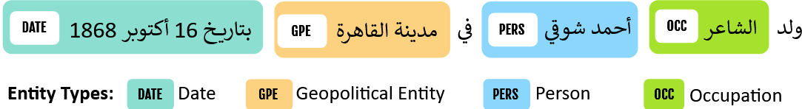
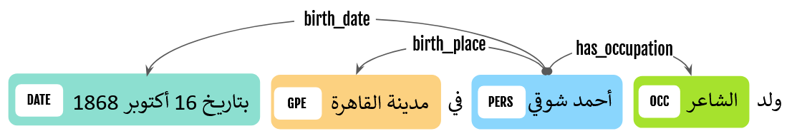

Registration
Registration for KnowledgeGraphEval 2026 is now open until 20 July 2026. Registered participants will receive access to the datasets, detailed task guidelines, and Codabench submission links.
For further details you can reach us by KnowledgeGraphEval@gmail.com
Registration LinkOverview
KnowledgeGraphEval 2026 is a new and innovative shared task, and the first at ArabicNLP dedicated to knowledge graph construction from text. The task focuses on extracting entities and semantic relations from Arabic text in order to build structured and machine-readable knowledge representations.
Knowledge graphs have become a fundamental component of modern AI and NLP systems. They are widely used in web search, question answering, semantic search, information retrieval, and Retrieval-Augmented Generation (RAG) systems built on Large Language Models (LLMs).
Despite their growing importance, Arabic knowledge graph construction remains significantly underexplored. KnowledgeGraphEval 2026 aims to bridge this gap by introducing realistic and challenging evaluation scenarios for Arabic information extraction and structured knowledge generation.
Arabic knowledge graph construction: The first ArabicNLP shared task dedicated to extracting structured knowledge graphs from Arabic text.
Cross-domain evaluation: Systems are evaluated under both in-domain and out-of-domain settings to measure robustness and generalization.
Entity and relation extraction: The shared task decomposes knowledge graph construction into named entity recognition and semantic relation extraction.
LLM and retrieval-ready benchmark: Supports modern NLP pipelines including LLMs, RAG systems, and scalable knowledge-intensive applications.
Subtasks
KnowledgeGraphEval 2026 includes two complementary subtasks. Participants may participate in any subset of the subtasks.
AdaptNER | Cross-Domain Named Entity Recognition
Adapting NER across different domainsThis subtask focuses on cross-domain adaptation for Arabic Named Entity Recognition (NER). Participants are required to develop NER systems that can adapt from the Wojood NER corpus to unseen domains in Konooz. The goal is to evaluate how effectively BERT-based NER models generalize across different Arabic domains. Participants are expected to use the training and development splits of Wojood to build their systems. The models will then be evaluated on ten unseen domains from Konooz. Participants are encouraged to apply domain adaptation methodologies existing in the literature to improve model robustness and cross-domain generalization.
Dataset
Participants will be provided with the training and development splits of the Wojood NER corpus , which contain approximately 448K tokens and 72K entity mentions annotated with 21 entity types. These splits will be used to train the NER models. The trained models should then be adapted. The evaluation should be conducted on Konooz MSA , which covers 10 domains and contains approximately 50K tokens selected from the Konooz dataset.
Format and Evaluation
The datasets are provided in standard CoNLL format, and participants must generate predictions using sequence-labeling schemes such as BIO tagging. Evaluation will be conducted on nested NER across 10 different MSA domains using entity-level micro F1-score. A prediction is considered correct only if both the entity span and entity type exactly match the gold annotation.
Baselines and Resources
We provide a baseline system in which a BERT-based model is trained on Wojood and evaluated on Konooz.
Figure 1: Example of Arabic Named Entity Recognition Annotation

| Method | Domains | ||||||||||
|---|---|---|---|---|---|---|---|---|---|---|---|
| Agriculture | Art | Economics | Finance | Health | History | Law | Politics | Science | Sport | All | |
| BERT w/o adaptation (AraBERTv02) | 0.43 | 0.67 | 0.68 | 0.61 | 0.66 | 0.67 | 0.66 | 0.67 | 0.65 | 0.58 | 0.63 |
RE | Relation Extraction
Semantic relation classification between predefined entitiesThis subtask focuses on extracting semantic relations between entities in Arabic text. For each sentence, the entity spans are already provided, and participants must predict the correct relation label between each entity pair from a predefined set of relation types, or assign no-relation when no valid relation exists. Using the example in Figure 1, participants are expected to extract the relations shown in Figure 2.
Dataset
Participants will use WojoodRelations, a large-scale Arabic benchmark for semantic relation extraction that extends the original Wojood NER corpus with annotated semantic relations between entities. The dataset includes 40 fine-grained relation types, where each instance is represented as a structured (subject, relation, object) triple. The corpus is divided into 70% training and 30% test splits. The final official evaluation will be conducted on the held-out 30% test set.
Format and Evaluation
Participants will be provided with the WojoodRelations test set, where each sentence contains predefined entity mentions and requires predicting a relation label from a fixed set of relation types or no-relation. Submissions must be formatted as a text file, with each line containing the sentence ID and predicted relation label. System performance will be evaluated using micro F1-score, where a prediction is correct only if it exactly matches the gold relation label.
Baselines and Resources
To support participation in the shared task, we provide two baselines:
- A fine-tuned BERT-based model for sentence-level relation classification.
- An LLM-based few-shot retrieval-augmented generation (RAG) approach that uses retrieved examples to predict the relation label.
Figure 2: Example of Arabic Relation Extraction Annotation

| Method | Precision | Recall | F1-Score |
|---|---|---|---|
| BERT baseline (ArBERTv2) | 88.91 | 88.65 | 88.61 |
| LLM baseline (gpt-4o) | 89.25 | 83.66 | 85.78 |
Important Dates
- May 16, 2026: Release of the shared task website and registration form.
- June 5, 2026: Release of training/development data and evaluation scripts.
- July 20, 2026: Registration Deadline and Blind Test Data Release.
- July 30, 2026: Official results and rankings are released.
- August 22, 2026: Deadline for Camera-ready for Participant System Description Papers.
- October 24-29, 2026: ArabicNLP 2026 / EMNLP 2026 - Shared task overview and participant systems presented in Budapest, Hungary.
Organizers
- Alaa Aljabari, Birzeit University, Palestine
- Nagham Hamad, Birzeit University, Palestine
- Abdellah El Mekki, University of British Columbia, Canada
- Muhammad Abdul-Mageed, University of British Columbia, Canada
- Imed Zitouni, Meta
- Sanjay Chawla, QCRI, Hamad Bin Khalifa University (HBKU), Qatar
- Mustafa Jarrar, Hamad Bin Khalifa University (HBKU), Qatar